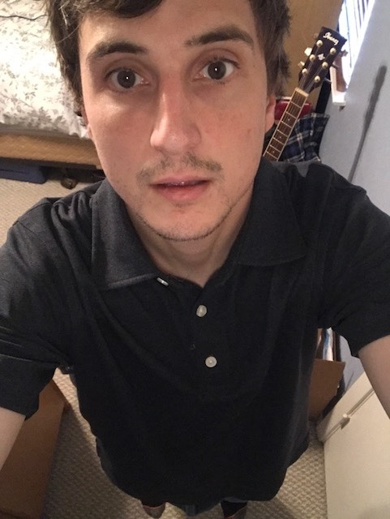

About Me

Hello, my name is Harrison Palmer and well…I’m now a coding bootcamp student. Now thats not how I usually define myself but over the next 6 months this will be my life. I am born and raised in Austin, TX and attended Texas State University. I currently work for the American Cancer Society as a Cancer Resource Specialist. The job has its ups and downs but even getting to make a small impact on someones life can be very rewarding.
I enjoy playing video games, going for a rune, playing music and simply just hanging out with friends. I like to travel but I have not done very much of that but hopefully that changes in the future. I also enjoy reading historical non-fiction books, anything related to history really.
Whenever I do get to travel I really want to make the trip to Europe. There are so many castles there and castles have fascinated me since I was young. And in Europe there are just a lot of old cities and interesting architecture. I also would like to travel to South America to see the rainforest. The rainforest seems so magical when I have learned about it in school and is a place like no other on earth. The last place that I have a real desire to travel is Africa. Africa seems very mysterious simply because the continent is so large. I feel like one could spend a lifetime exploring Africa and could still not explore it all!